Brownfield — TimeArch Brownfield Discovery
- Navy = automated step (code or AI)
- Tan = knowledge package (artifact)
- Grey-blue = human decision
- Dashed tan = prompt context (role, task, rules, references)
- Catalog: figures/README.md · Model: META-COMPOSITION.md
01 — TimeArch Brownfield Discovery (wrapped process)
The main picture: what partners see outside, and the steps inside.
- Outside = one process step
- Inside = Import → Recover → Analyze → Human review → Package → Release
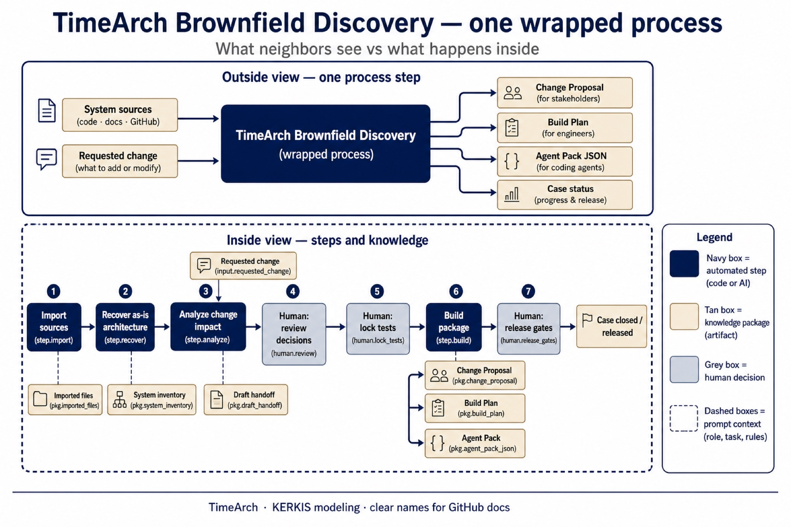
02 — Brownfield path — step by step
Full journey as a linear knowledge pipeline.
- Each step consumes the previous package
- Humans approve decisions, tests, and release
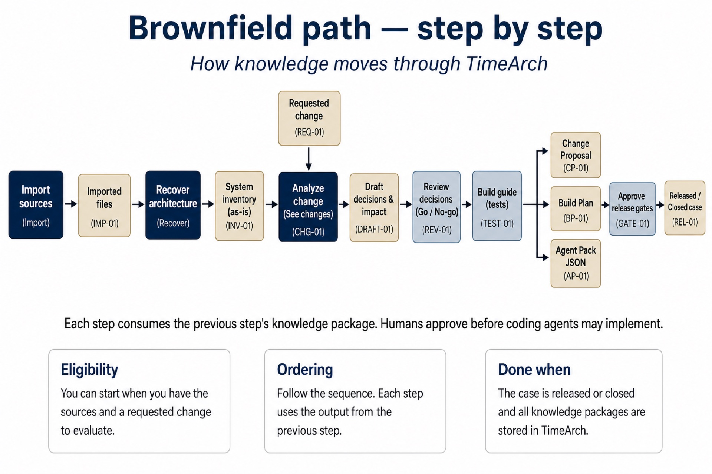
03 — Who does the work
Code workers, AI workers, and human workers.
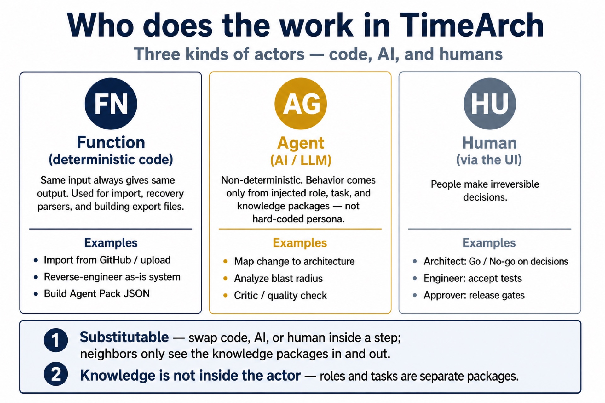
04 — Human review and rework loop
How Go / No-go routes work without a hard-coded flowchart.
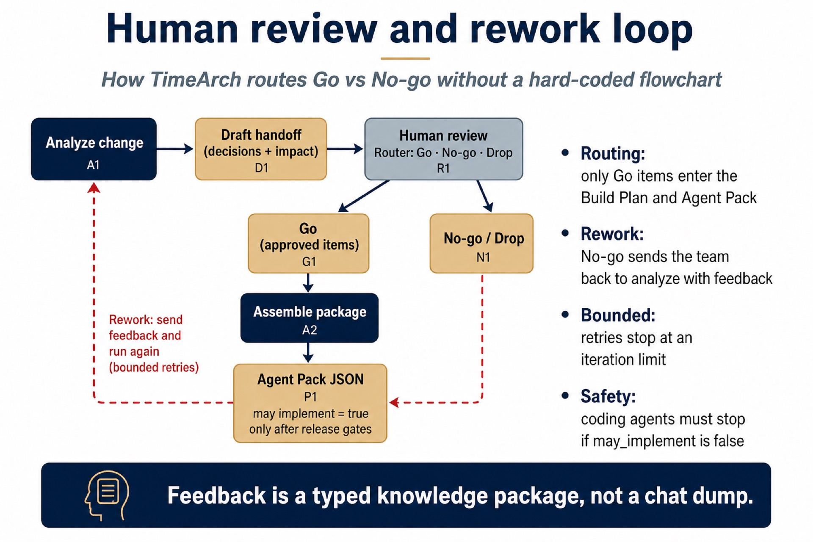
05 — One AI step in detail
Map change to architecture — role, task, rules, references → mapping.
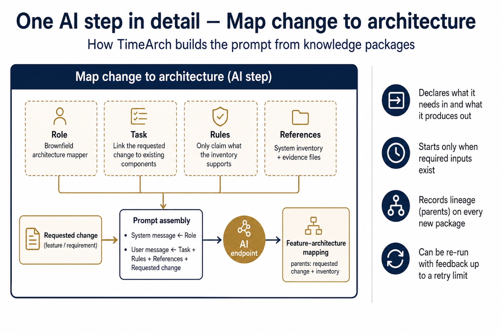
06 — Nested change analysis
One wrapped step outside; coordinator + specialists inside.
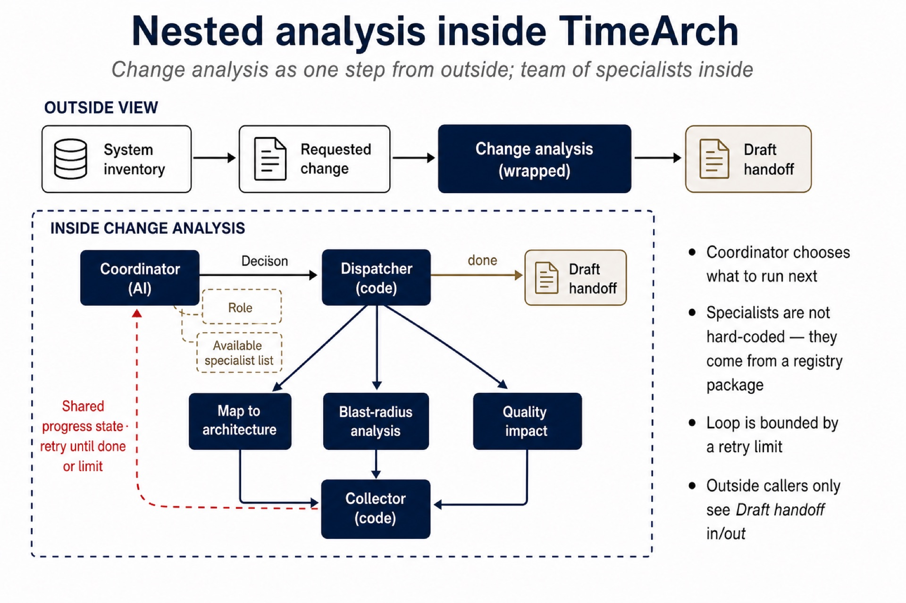
Greenfield — TimeArch Greenfield Architecture Lifecycle
- Same legend as brownfield (navy / tan / grey-blue)
- 18 stages in four phases; Stage 15 seals the package before coding stages
- Catalog: figures/greenfield/README.md · Model: META-COMPOSITION-GREENFIELD.md
gf-01 — TimeArch Greenfield Architecture Lifecycle (wrapped process)
What partners see outside, and the four phases inside.
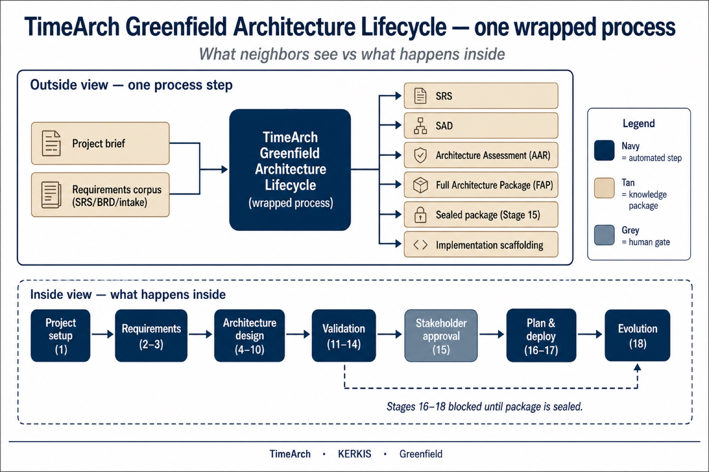
gf-02 — Greenfield path — step by step
All 18 stages grouped into four phases.
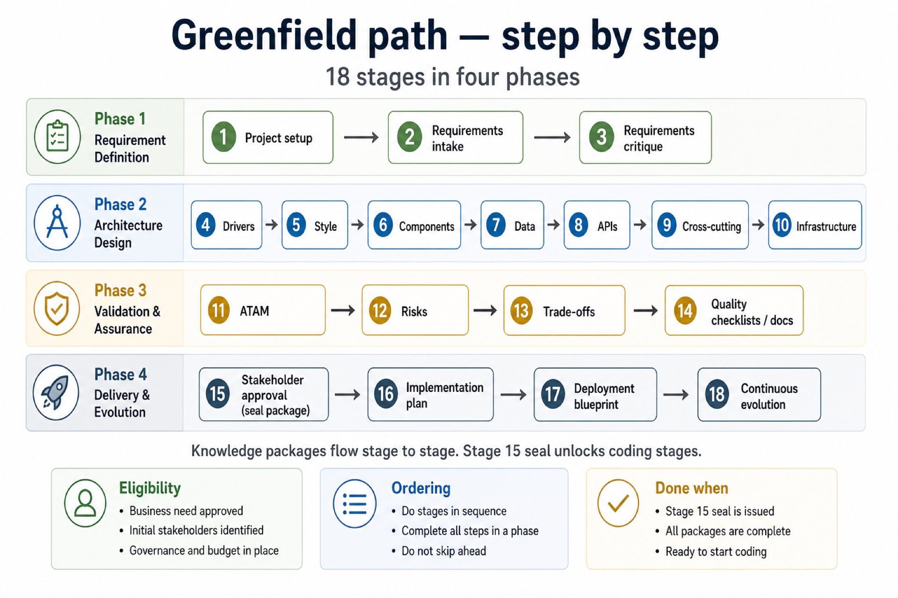
gf-03 — Who does the work (greenfield)
Code, AI, and humans across the lifecycle.
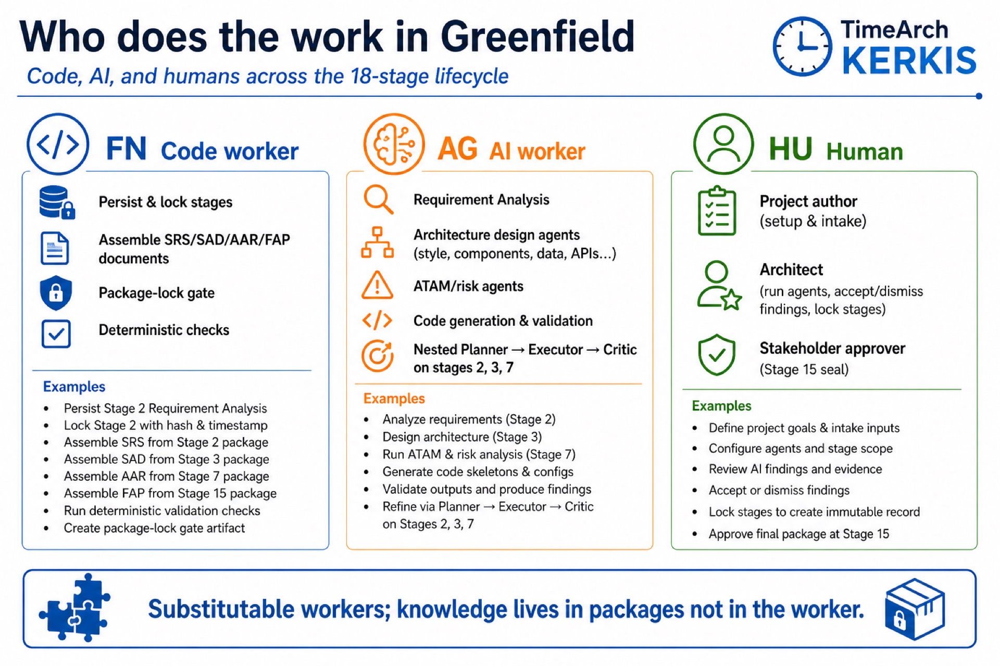
gf-04 — Human review and package seal
Per-stage critique loop and Stage 15 seal.
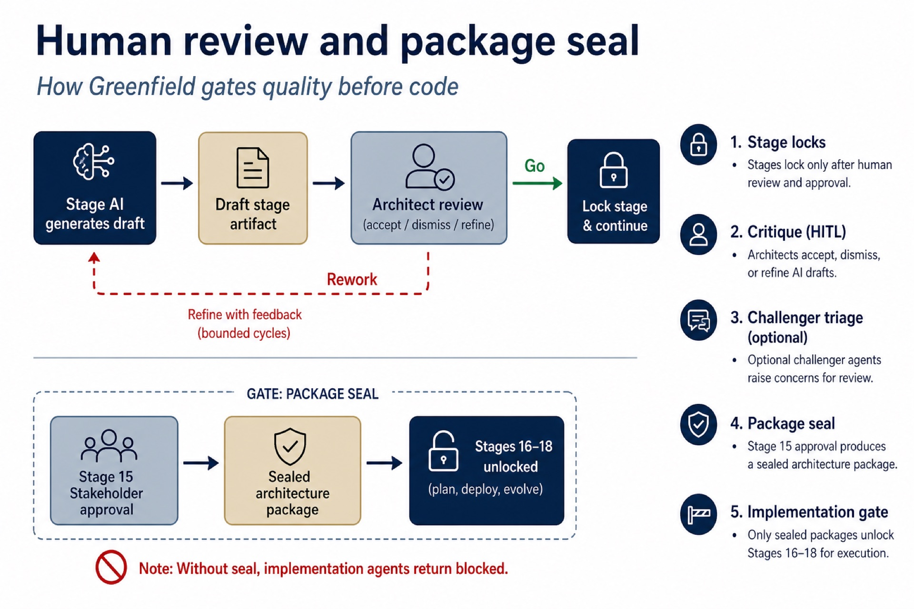
gf-05 — One AI step — Analyze requirements
Stage 2 Requirement Analysis Agent in detail.
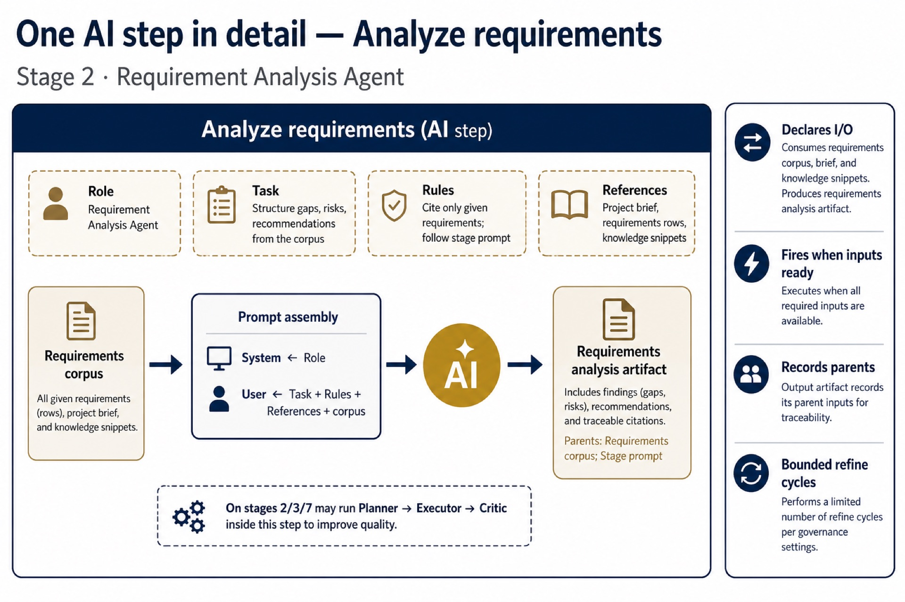
gf-06 — Nested agentic stage
Planner → Executor → Critic, plus optional Challenger.
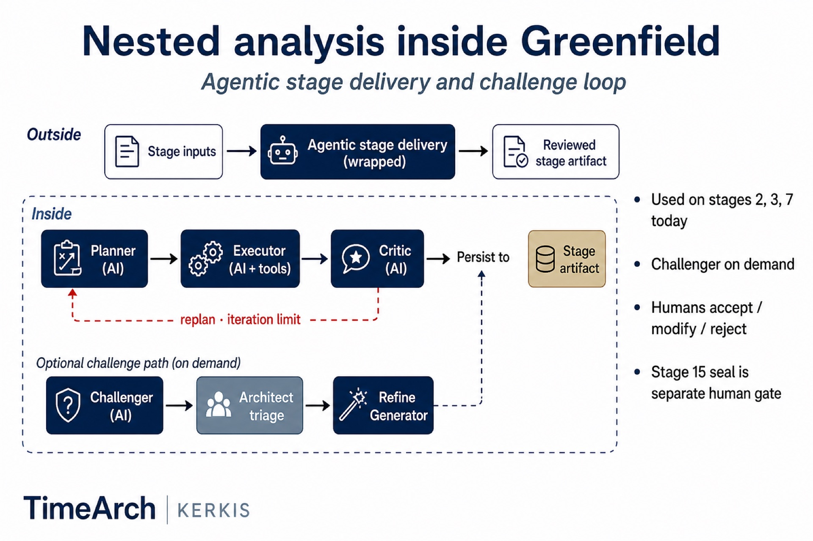